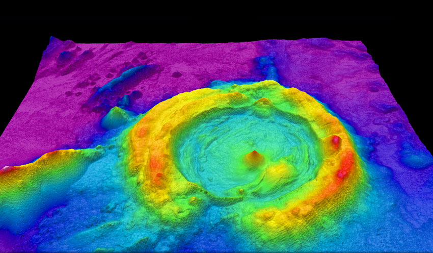
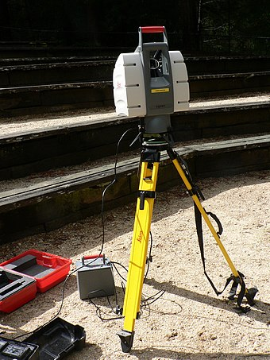

11月25日
笔记
贝叶斯定理
概述
在现实世界中，我们每个人都需要预测。想要深入分析未来、思考是否买股票、政策给自己带来哪些机遇、提出新产品构想，或者只是计划一周的饭菜。
贝叶斯定理就是为了解决这些问题而诞生的，它可以根据过去的数据来预测出未来事情发生概率。
贝叶斯定理的思考方式为我们提供了有效的方法来帮助我们做决策，以便更好地预测未来的商业、金融、以及日常生活。
公式
应用案例
- 全概率公式
这个公式的作用是计算贝叶斯定理中的P(B)。
全概率公式：
- 贝叶斯定理在做判断上的应用
- 贝叶斯定理在医疗行业的应用
- 贝叶斯垃圾邮件过滤器
LiDAR
LiDAR (Light Detection and Ranging) is a method used to generate accurate 3D representations of the surroundings, and it uses laser light to achieve this. Basically, the 3D target is illuminated with a laser light (a focused, directed beam of light) and the reflected light is collected by sensors. The time required for the light to reflect back to the sensor is calculated.
Different sensors collect light from different parts of the object, and the times recorded by the sensors would be different. This difference in time calculated by the sensors can be used to calculate the depth of the object. This depth information combined with the 2D represenation of the image provides an accurate 3D representation of the object. This process is similar to actual human vision. Two eyes make observations in 2D and these two pieces of information are combined to form a 3D map (depth perception). This is how humans sense the world around us.
This technology is used to create 3D representations in many real world scenarios. For example, it is used in farms to help sow seeds and remove weeds. A moving robot uses LiDAR to to create a 3D map of its surroundings and using this map, it avoids obstacles and completes its tasks. This technology is also used in archaeology. LiDAR is used to create 3D renderings of 2D scans of artifacts. This gives an accurate idea of the 3D shape of the artifact when the artifact cannot be excavated for whatever reason. Finally, LiDAR can also be used to render high quality 3D maps of ocean floors and other inaccesible terrains, making it very useful to geologists and oceanographers. Below is a 3D map of an ocean floor generated using LiDAR:

Flash LiDAR Camera

RPN
Sensor representations in the brain
- Seeing with your tongue
用舌头神经去学习看东西 a system called BrainPort undergoing FDA trials
- Human echolocation(sonar)
learn to interpret the pattern of sounds bouncing off your environment - that’s sonar
Haptic belt: Direction sense
if you have a strap around your waist, ring up buzzers and always have the northmost one buzzing
implanting a 3rd eye
some of the bizarre example, but
if you plug a third eye into a frog, the frog will learn to use that eye as well.
结构体与共用体内存
结构体占用的内存大于等于所有成员占用的内存的总和（成员之间可能会存在缝隙），共用体占用的内存等于最长的成员占用的内存。共用体使用了内存覆盖技术，同一时刻只能保存一个成员的值，如果对新的成员赋值，就会把原来成员的值覆盖掉。
英语
defer to：尊重；听从
representation：表达式
1 over m： 1/m
superimpose：添加；重叠；附加；安装
nested list structure: 嵌套列表
address the issue: 解决问题
have fall out of：跌落
fabrication plant: 加工厂；加工设备
susceptible to: 易受…影响的；对…敏感的
w.r.t. ： with respect to 的缩写。是 关于；谈及，谈到的意思。
i.e. ：也就是，亦即（源自拉丁文id est），换而言之。